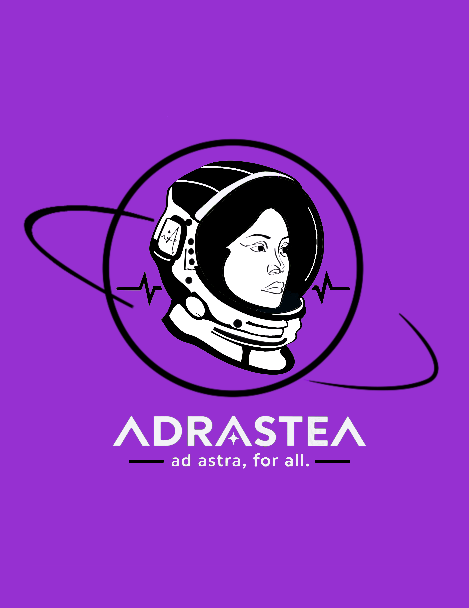
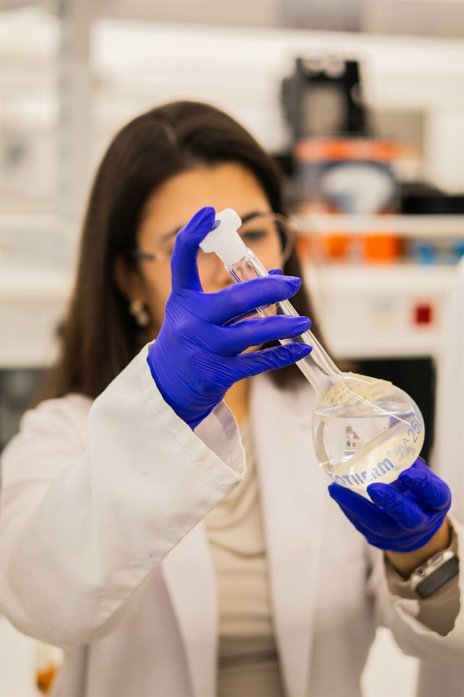
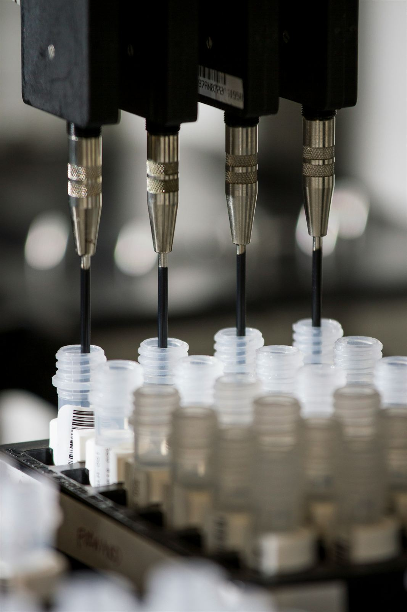

Ask better questions
Investigate the health and human-factors questions that shape women’s ability to access and thrive in space.

Research · Advocacy · Space
Equipping women to better access, endure & thrive in space


Adrastea functions across three core research divisions and two internal teams, bringing young researchers together with senior scientists, engineers, and policymakers. Where do you fit in?
Apply nowResearch with purpose
Women’s health in space calls for more than one kind of expertise. Adrastea brings research, engineering, policy, and communication into the same conversation.
Investigate the health and human-factors questions that shape women’s ability to access and thrive in space.
Explore technology and design approaches that respond to real needs in spaceflight and beyond.
Translate evidence into policy, advocacy, and clear communication so more people can take part in the work.